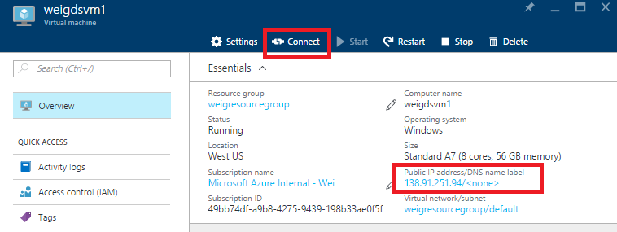
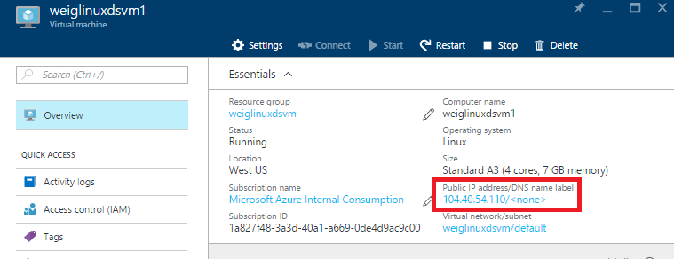
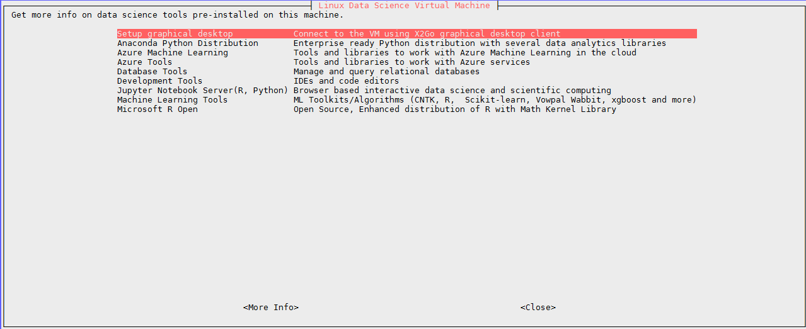
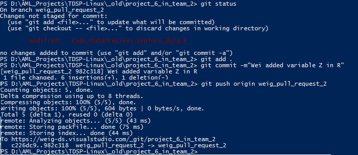

Install Git on Windows and Linux machine
Windows machine
Chocolaty and Git Credential Manager need to be installed before using Git.
iwr https://chocolatey.org/install.ps1 -UseBasicParsing | iex
choco install git-credential-manager-for-windows -y
Linux machine
sudo yum install git
Create SSH public key
First generate a public SSH key, and add the key to SSH public keys in TDSP security setting page using this command. Copy the string starting with "ssh-rsa" and go to visual studio team server, click your name --> security --> SSH public keys --> +Add to store your paste save the copied string.
ssh-keygen
cat .ssh/id_rsa.pub


Provision Data Science Virtual Machine
Go to Azure Portal to provision a Data Science Virtual Machine. +New --> Data Science Virtual Machine, you can choose to a Windows or Linux data science virtual machine. Fill in the required information and your machine will be starting shortly.


When your machine is provisioned, for Windows DSVM, you can use remote desktop to login and for linux DSVM, you can use ssh tools like Putty to login.




Create file share
Windows
wget "https://raw.githubusercontent.com/Azure/Azure-MachineLearning-DataScience/master/Misc/TDSP/CreateFileShare.ps1" -outfile "CreateFileShare.ps1"
.\CreateFileShare.ps1
Linux
wget "https://raw.githubusercontent.com/Azure/Azure-MachineLearning-DataScience/master/Misc/TDSP/CreateFileShare.sh"
bash CreateFileShare.sh
Mount file share
Windows
wget "https://raw.githubusercontent.com/Azure/Azure-MachineLearning-DataScience/master/Misc/TDSP/AttachFileShare.ps1" -outfile "AttachFileShare.ps1"
.\AttachFileShare.ps1
Linux
wget "https://raw.githubusercontent.com/Azure/Azure-MachineLearning-DataScience/master/Misc/TDSP/AttachFileShare.sh"
bash AttachFileShare.sh
Sprint planning
-
Create feature under team project
After your project is created under a team, go to team overview page and click Manage work --> Features --> New Item, and then give some description on this feature. You can drag the feature to different stages in the board: New Active, Resolved, or Closed. The feature can also be assigned to a specific person in your team.


-
Add stories under feature
Under the feature, you can add stories to list out the tasks needed for this feature. Click the story item, you can edit the status, description, comments, planning, priority, etc. You can switch the view from board to backlog, features to stories to check the status of your project.


-
Add Tasks in current iteration
In the current iteration backlog, click New to create new task. Click the + icon to set it to be a task or a bug. Click the item to add more details.


Checkout branch
To create a branch, use git checkout -b <new-branch-name> [<base-branch-name>], where base-branch-name is optional and defaults to master. I'm going to create a new branch called weigpullrequest_2 from the master branch and push it to team server.
git pull origin master
git checkout -b weig_pull_request_2
git push origin weig_pull_request_2
git status

You can work in your local project folder to make modifications. Suppose you made some changes in the R file in your local machine.

You can commit thoses changes to the branch using the regular Git commands.
git status
git add .
git commit -m"Wei added variable Z in R"
git push
Pull request and Code review

Go to your team server, under your project page, you can see your branch is listed. Reviewers can be added to review your work through creating a pull request. Then your reviewers can make comments on your work.


Security control